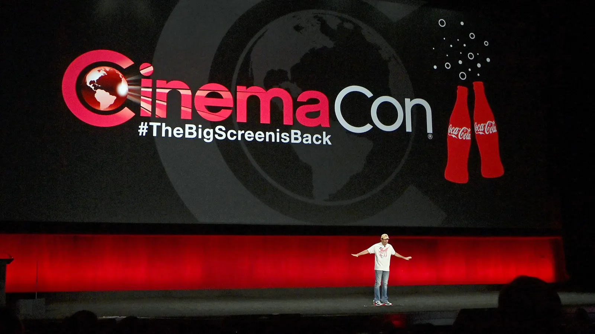

Oscars 2026
Publié le 15 Mars 2026
La 98ᵉ édition des Oscars a célébré une année cinématographique exceptionnelle.
Lire l'articleLa 98ᵉ édition des Oscars a célébré une année cinématographique exceptionnelle, avec des films comme One Battle After Another, Sinners et Frankenstein.
Lire l'article complet
Publié le 15 Mars 2026
La 98ᵉ édition des Oscars a célébré une année cinématographique exceptionnelle.
Lire l'articlePublié le 1 Mars 2025
Une cérémonie riche en émotions pour le cinéma français.
Lire l'article
Publié le 27 Février 2025
Les performances de l’année récompensées par les acteurs.
Lire l'article
Publié le 25 Mars 2025
Les studios dévoilent leurs projets majeurs à venir.
Lire l'article
Publié récemment
Une taxe sur les films étrangers qui pourrait bouleverser l’industrie.
Lire l'article
Publié récemment
Retour sur les projets Marvel à venir.
Lire l'article
Publié précédemment
Les nominations et grands favoris de l’année.
Lire l'article